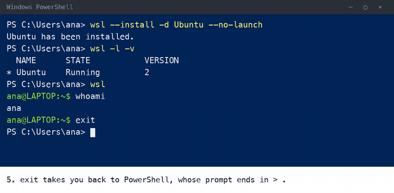
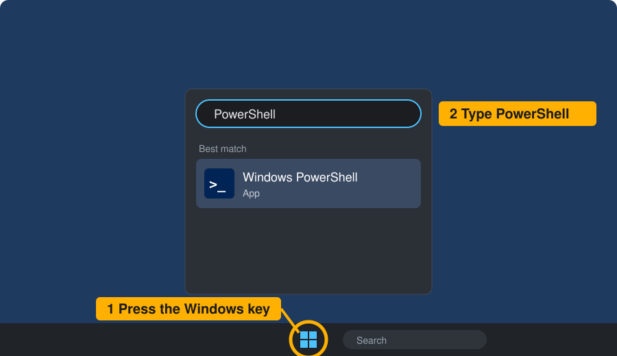
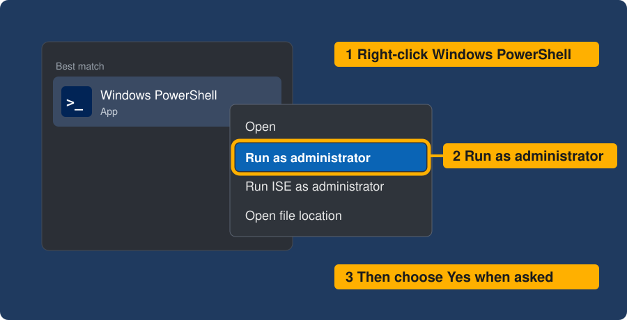
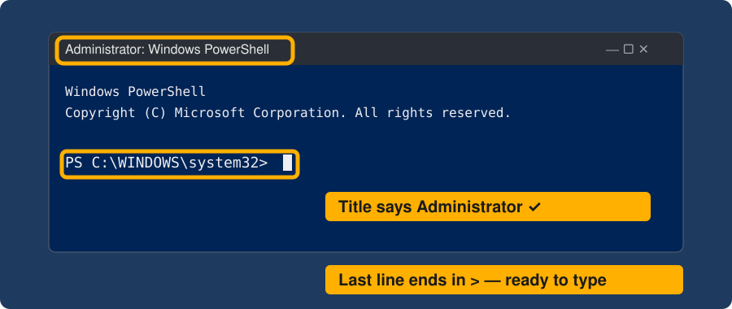

Appendix A — Windows: Get Ubuntu Ready
Quarto, reproducible publishing, coding assistants, Markdown, Python, EPUB, data analysis, k-means clustering
This appendix is step 1 of the setup (Section 3.2) for Windows. The workshop’s tools are made for Linux, so on Windows you install Ubuntu, a widely used version of Linux, inside Windows with WSL, the Windows Subsystem for Linux. Think of Windows as your house, with your browser, files and apps, and Ubuntu as a room inside it, a window where you type commands. Everything in this book happens in that room, your Windows browser still opens what you make, and nothing on Windows is removed.
Why not PowerShell, Windows’s own command window? Because the book’s commands, and the way the setup was tested, are for Linux. Some tools have Windows installers, but their paths and commands differ, and each variant is another way to go wrong.
Figure A.1 shows the whole procedure in one window. The steps below go slowly, with a restart in the middle, and the first time Ubuntu opens it also asks you to choose a username and password, which the animation skips.

to ana@LAPTOP:~$; whoami prints ana; exit returns to the PowerShell prompt." class="anim img-fluid figure-img" loading="lazy">wsl starts Ubuntu, and whoami prints your name. An illustration drawn for the workshop.
Before you start
- About 20 minutes and one restart.
- An administrator account on this computer. On a work laptop, ask IT first; if IT types the password for you, stay signed in as yourself. Without one, WSL cannot be installed: arrange to work with someone else’s computer.
- Windows 11, or Windows 10 version 2004 or newer (Settings → System → About shows yours).
- Plugged in, on a strong connection: Ubuntu is a big download.
- These instructions on a second screen or a phone, because the restart closes your browser.
Do one step, compare your screen with You should see, then go on. If something looks different, see If you are stuck.
Step 1: open PowerShell as administrator
PowerShell is a Windows window for typing commands; you need it for a few minutes only.
- Press the Windows key, or click the Windows logo on the taskbar, and type
PowerShell. - Right-click “Windows PowerShell” and choose Run as administrator.
- Choose Yes when Windows asks.


A window whose title starts with “Administrator”, ending in a line like PS C:\WINDOWS\system32>.

Step 2: turn on WSL
Paste this into the PowerShell window (Ctrl+V, or a right-click if that does nothing) and press Enter:
wsl --install -d Ubuntu --no-launchPS C:\WINDOWS\system32> wsl --install -d Ubuntu --no-launch
Installing: Virtual Machine Platform
Virtual Machine Platform has been installed.
Installing: Windows Subsystem for Linux
Windows Subsystem for Linux has been installed.
Installing: Ubuntu
Ubuntu has been installed.
The requested operation is successful. Changes will not be effective until the system is rebooted.A message that you must restart, such as “Changes will not be effective until the system is rebooted”. If instead it says Ubuntu is installed or “already exists”, skip to step 5.
Step 3: restart the computer
Save your work, then Start → Power → Restart.
The command runs twice because, when a restart is needed, the first run only turns on Windows features and installs no Linux at all (checked against WSL’s source code, version 3.0.3, on 2026-11-06). --no-launch keeps Ubuntu’s first start out of the administrator window, whose folder is a Windows system folder.
Step 4: download Ubuntu
- Open a normal PowerShell window, not as administrator: press the Windows key, type
PowerShell, and press Enter. Ubuntu is installed for the account that runs this line, so it must be yours. - Paste the same line and press Enter:
wsl --install -d Ubuntu --no-launchThis is the long wait: the download can take many minutes, and the percentage may stand still for a while.
That it finished, or “already exists”. Both mean go on. Keep this window open.
You will now have two windows, and their last line tells them apart: PowerShell’s ends in > (like PS C:\Users\Ana>), Ubuntu’s in $ (like ana@LAPTOP:~$). PowerShell is only for steps 1, 2, 4 and 6; everything else happens in Ubuntu.
Step 5: open Ubuntu, and choose a username and password
- Press the Windows key, type
Ubuntu, and press Enter. The first start unpacks files: wait. - Username: one short word in lower case, with no spaces, such as
ana. It need not match your Windows name. - Password: type one you will remember, press Enter, and type it again.
Nothing appears while you type the password: no dots, no stars. That is normal; keep typing and press Enter. Write the password down: sudo asks for it in step 8.
A prompt, the line that means “ready for a command”, with your own names: ana@LAPTOP:~$. ana is you, LAPTOP this computer, ~ your home folder, and $ where you type. In this Ubuntu window, type whoami and press Enter: it prints your username.
Step 6: check that Ubuntu runs on WSL 2
In the PowerShell window (its line ends in >):
wsl -l -vUbuntu with a 2 in the VERSION column:
NAME STATE VERSION
* Ubuntu Running 2If it says 1, run wsl --set-version Ubuntu 2 and wait. Then type exit to close PowerShell.
Step 7: practise copy and paste
| With the mouse | With the keyboard | |
|---|---|---|
| Copy | select the text, then right-click | select the text, then Ctrl+Shift+C |
| Paste | right-click with nothing selected | Ctrl+Shift+V |
Ctrl+C with nothing selected does not copy: it stops whatever is running. If that happens, run the command again.
Copy echo "Paste works", paste it into Ubuntu and press Enter; the next line should say Paste works.
Step 8: install two small tools
sudo apt update && sudo apt install -y curl gitsudo means “do this as administrator” and asks for your Ubuntu password from step 5, hidden again; apt is Ubuntu’s installer; && means “and then, if that worked”. A lot of text scrolls past. When the $ comes back, check:
curl --version && git --versionA version number for each, such as git version 2.43.0. Yours may differ.
Step 9: four habits
Stay in your home folder. Keep project folders there, not in Documents, Desktop or OneDrive. If the prompt shows /mnt/c, you are in a Windows folder: cd ~ goes home. (Windows drives appear under /mnt/; keeping projects in ~ is also faster.)
See your files in Windows. explorer.exe . opens the current folder in File Explorer, where you can double-click what you made.
Open a second tab. Ctrl+Shift+D duplicates the tab; you will need one while the assistant is busy in the first. A new tab may start in the home folder, so cd back into your project.
Copy sign-in links whole. Ubuntu may not be able to open your browser, so tools print a link: copy all of it into your Windows browser, and if the website shows a code, paste it back into Ubuntu.
Don’t install the Windows versions of Quarto, Python or a coding assistant for this book. Ubuntu needs its own copies, and the Windows ones can get in the way.
Step 1 is done when wsl -l -v shows Ubuntu with VERSION 2, an Ubuntu window shows a prompt ending in $, git --version prints a version in Ubuntu, and you know your Ubuntu password. Continue with Section 3.3. Next time, open Ubuntu from the Start menu: your files are still there.
Useful PowerShell commands
| Command (in PowerShell) | Does |
|---|---|
wsl -l -v |
lists each Linux with its state and WSL version (from Ubuntu: wsl.exe -l -v) |
wsl --user root |
opens a root shell, the documented way to reset a forgotten password with passwd <username> |
wsl --shutdown |
stops every running Linux at once, including the assistant and any preview: save your work first |
If you are stuck
| You see | Do this |
|---|---|
| The install stuck at 0.0% | Close it, then in PowerShell run wsl --install --web-download --no-launch -d Ubuntu |
| No Ubuntu in the Start menu | Do step 4 again in a normal window, not as administrator; still none? In PowerShell type wsl ~ |
Error 0x80370102, or “virtualization is not enabled” |
Virtualization is off in the computer’s BIOS; without BIOS access this cannot be fixed |
| A list of options and no install | Windows is too old: run Windows Update, restart, repeat step 2 |
| “Access denied”, or no Run as administrator | You need an administrator account |
| “Already exists” | Ubuntu is installed: go to step 5 |
wsl is “not found” |
You are in Ubuntu: use PowerShell, whose line ends in > |
| Ubuntu closes or won’t start | Restart the computer and open Ubuntu again |
| You see | Do this |
|---|---|
| Nothing moves, and the title starts with “Select” | A click paused the window: press Esc |
| A download fails on a work network | Try another network, such as a phone hotspot |
The prompt starts with root@ and ends in # |
The username step was skipped: ask for help before going on |
sudo says “Sorry, try again” |
Wrong password: type it again slowly, it stays hidden |
| Forgotten Ubuntu password | In PowerShell, wsl -u root, then passwd ana with your username, then exit |
command not found right after an install |
Open a new tab or window and try again |
For anything else, copy the command and the full error into a web chat, say “Windows, Ubuntu on WSL”, and try one suggested fix at a time, never pasting a password.
These steps were written from Microsoft’s WSL documentation (install, setup, basic commands, file systems and troubleshooting, checked 2026-11-06) and have been checked on a Mac against that documentation, not yet on a clean Windows machine. Exact messages can differ between Windows versions.